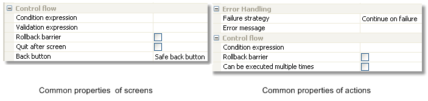

Screens and Actions


Screens and Actions |
|
Building an install4j project creates media files which are either installers or archives. An installer is defined as a sequence of screens an actions and is executed when the user executes the media file. Installers usually install an uninstaller which removes the installation. The uninstaller, too, is a freely configurable sequence of screens and actions. Archives do not have an installer or uninstaller and the user extracts the contained data with other tools.
In addition to the installer and uninstaller, you can define custom installer applications that are added to the distribution tree. These custom installer applications can use the same screens and actions that the installer can use. Unlike installer and uninstaller, they are also added to archives. They can be used to write separate maintenance applications for your installations that are either invoked directly by the user or programatically by your application.
An important use-case for custom installer applications is to create a first-run installer for archives.
While there is no need to install files to the installation directory in the case of an archive, there will usually be
screens and actions that set up the environment of your application. In order to avoid the duplication
of screens and actions, install4j offers the possibility to create links to screens and actions.
In this way, a custom installer application can include a partial set of the screens and actions in the installer.
Such a first-run installer should be added to the .install4j runtime directory in order to no
expose it as part of the application. This is done by specifying its executable directory property as the empty
string. You can invoke the first-run installer programatically with the
com.install4j.api.launcher.ApplicationLauncher utility class. Please see the Javadoc for more
information. When any of the generated launchers of an installed archive are run for the first time, the system
property install4j.firstRun will be set. You can query that property with
Boolean.getBoolean("install4j.firstRun") at the beginning of your main method to decide whether to
launch the first-run installer or not.
Another common use case for custom installer applications is to create auto-updaters. Auto-updaters are described in detail in a separate help topic.
At runtime, install4j instantiates all screens and actions and organizes the screen flow and action execution. There are a number of aspects regarding this control flow that you can customize in the install4j IDE. Both screens and actions have an optional "Condition expression" property that can be used to conditionally show screens and execute actions. Screens have a "Validation expression" property that is invoked when the user clicks on the "Next" button allowing you to check whether the user input is valid and whether to advance to the next screen. These are the most commonly used hooks in the control flow for "programming" the installer. All "expression" properties in install4j can be simple Java expressions or scripts of Java code as described on the help page for the Java code dialog.

If you use a series of screens to query information from the user, the users expect to be able to go back to previous screens in order to review or change their input. This is fine as long as no actions are attached to the screen. When actions have been executed, the questions is what should happen if the user goes back to a screen with actions and clicks on "Next" again. By default, install4j executes actions only once, but that may not be what you want, if they operate on the user input in a screen. Since install4j has no way of knowing what should happen in this case, it applies a "Safe back button" policy by default: if the previous screen had actions attached, the back button is not visible. You can change this policy for each screen, either making the back button always visible or always hidden. The "Can be executed multiple times" property of each action is relevant in the case where you you make the back button always visible for the next screen.
Another hook into the control flow is the ability to declare every screen as a "Finish" screen, i.e. the "Next" button will be replaced with a "Finish" button and the installer will quit after that button is pressed. Consider to use a "banner" screen in that case since it alerts the user that a special screen has been reached.
At any time in the installation sequence the user can hit the "Cancel" button. The only exception in the standard screens is a customizable progress screen where the "Cancel" button has been disabled. install4j is able to completely roll back any modification performed by its standard actions. However, the expectation of a user might not be that the installation is rolled back. Consider a series of post-installation screens that the user doesn't feel like filling out. Depending on the installer, the user might feel that installation will work even if the installer is cancelled at that point. A complete rollback would then irritate the user. That's why install4j has the concept of a "rollback barrier". Any action or screen can be a rollback barrier which means that any actions before and including that action or screen will not be rolled back if the user cancels later on.
Be default, only the "Installation screen" is a rollback barrier. This means that if the user cancels while the installation is running, everything is rolled back. If the user cancels on any of the following screens, nothing that was performed on or before the installation screen is rolled back. With the "Rollback barrier" property of actions and screens you can make this behavior more fine-grained and customize it according to your own needs.
Every action has two possible outcomes: failure or success. If an action succeeds the next action is invoked. When the last action of a screen is reached, the next screen is displayed. What should happen if an action doesn't succeed? This depends on how important the action is to your installation. If your application will not be able to run without the successful execution of this action, the installer should fail and initiate a rollback. However, many actions are of peripheral importance, such as the creation of a desktop link. Declaring that the installer has failed because a desktop link could not be created and rolling back the entire installation would be counterproductive. That's why the failure of an action is ignored by install4j by default. If a possible failure of an action is critical, you can configure its "Failure strategy" to either ask the user on whether to continue or to quit immediately.
Standard actions in install4j fail silently, i.e. the "Create a desktop link" action will not display an error message if the link could not be created. For all available failure strategies, you can configure an error message that is displayed in the case of failure. The "Install files" action has its own, more granular failure handling mechanism that is automatically invoked after the installation of each file.
install4j offers a series of standard screens that are fully localized and serve a specific purpose. These standard screens have a preferred order, when you insert such a screen it will insert itself automatically in the correct position. This order is not mandated, you can re-order the screens in any way you like, however they may not yield the desired result anymore. If for example you place the "Services" screen after the screen with the "Install service" actions (typically the "Installation" screen), the "Services" screen will not be able to modify the service installations anymore and the default values are used.
The customizable screens don't have a fully defined purpose, their messages are configurable and empty by default. For example the "Display progress" screen is similar to the "Installation" screen, however the title and the subtitle are configurable. Customizable screens also do not have any restriction with respect to how many times they can occur. While the "Installation" screen (and other screens) can occur only once for an installer, the "Display progress" screen could be used multiple times.
The "Welcome" and "Finish" screens have a special layout that is called "banner screen" in install4j. There are customizable banner screens to help you reproduce this layout if you require it in a different context. The most flexible of all customizable screens are the "configurable form" screens. They allow you to freely define the contents of a screen and are described in a separate help topic.
|
|